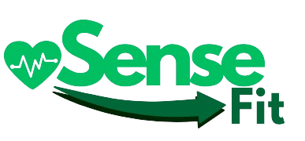

Education
University
Oxford Brookes University(2022 - 2025)
BSc (Hons) Computer Science
Final Grade: 2:1 (Upper Second Class Honours)
Graduated: 02/09/2025
GPA: 3.67
Average Grade: 67%
Nominated for the Oxford Brookes University Tech Show (1/18 Students) for my dissertation project "SenseFit".
Checkout the modules and grades from this degree below:
3rd Year (2024 - 2025)
COMP6031 - Cloud Computing and the Internet of Things
Grade: A (72.4%)
COMP6015 - Principles of Secure Operating Systems
Grade: A (71.8%)
COMP6013 - Dissertation (BSc Computing Project)
Grade: A (71%)
COMP6030 - Software Engineering
Grade: A (70%)
COMP6018 - Advanced Object-Oriented Programming
Grade: B+ (67.5%)
COMP6032 - Artificial Intelligence
Grade: C+ (55.6%)
COMP6011 - Machine Learning
Grade: C+ (51%)
2nd Year (2023 - 2024)
COMP5017 - Data Structures and Algorithms
Grade: A+ (81%)
COMP5022 - Innovative Product Development
Grade: A+ (80.5%)
COMP5004 - Software Development with C and C++
Grade: A+ (77.5%)
COMP5011 - Databases
Grade: B+ (65.5%)
COMP5020 - Foundations of Security
Grade: B (64.5%)
COMP5013 - Web Application Development
Grade: C+ (56.5%)
COMP5001 - Foundations of Computation
Grade: D (40%)
1st Year (2022 - 2023)
COMP4004 - Problem Solving and Programming
Grade: A+ (80%)
COMP4003 - Information Systems
Grade: A+ (79%)
COMP4005 - Object Oriented Programming
Grade: A+ (77%)
MATH4004 - Mathematics for Computing
Grade: A (73.2%)
COMP4033 - Basic Communications and PC Networking
Grade: A (70.3%)
COMP4009 - Foundations of Computer Systems
Grade: B (64%)
COMP4006 - DevOps
Grade: B (64%)
Pre-University
College
HSDC Alton (2019 - 2021)
A Levels: 3 Cs in Computer Science, Law and Psychology
Secondary School
Eggar's School (2014-2019)
8 GCSEs Grade C (4) and Above
Experience
Icon Solutions, London
Work Experience | July 2024
Gained hands-on exposure to the company's operations. Participated in coding exercises with assistance from Developers, observed agile daily meetings, and engaged in discussions with many knowledgeable professionals. This helped me understand industry practices as well as my employability and interview preparation.
schuh, Oxford
Part-Time Sales Assistant & Stockroom | Nov 2022 - Mar 2025
Treloar's School & College, Alton
Part-Time Assistant IT Technician | Nov 2021 – Feb 2022
Worked alongside experienced IT technicians, assisting with troubleshooting hardware issues and providing support to students and staff. This position deepened my understanding of IT infrastructure, computer maintenance and customer service within an educational setting.
Petersham Nurseries Teahouse, Richmond
Full-Time Waiter | Oct 2021 – July 2023
White Truffle Events, Alton
Part-Time Kitchen Porter | Oct 2019 – Aug 2021
Projects

SenseFit - Machine Learning Mobile Application for Preventing Injuries
Problem:
General consumers lack access to the sophisticated, data-driven injury prevention tools available to elite athletes, making it difficult for them to proactively manage their physical health and avoid injuries.
Solution:
SenseFit is a mobile application that uses machine learning to predict injury risk for everyday athletes. By integrating with consumer wearables like Fitbit, the app analyzes biometric data to provide personalized risk assessment each day and actionable advice, improving quality of life and healthier participation in sports.
Core Technologies:
- Machine Learning Algorithms: Random Forest & XGBoost Ensemble - selected based on peer-reviewed papers and testing.
- Frontend: React Native & Expo
- Backend: Flask API & PostgreSQL Database
- Data Integration: Fitbit Web API with OAuth 2.0
Achievements
Successfully developed a functional prototype that demonstrated the potential of machine learning in injury prevention. The project was nominated for the OBU Tech Show, showcasing its innovative approach and practical application in consumer health.
Future Potential
- With further development, SenseFit could integrate with more wearables.
- Expand its machine learning capabilities.
- Provide a comprehensive health management platform for consumers.
- Include sport specific and demographic insights for the user.
- Offer AI-driven recommendations based on the data.
- Enable operation on an edge device (RaspberryPi) for organizations.
For more information, to see updates, or to get in touch - please visit the SenseFit website.
ChatAdvisor - AI Student Support Chatbot
Problem:
University students, especially those with learning difficulties, often face challenges in navigating extensive support resources and accessing timely, understandable advice. This project aimed to enhance information accessibility and provide a streamlined student support solution.
Solution:
In an Agile Scrum team of seven, we developed ChatAdvisor, an AI-powered chatbot leveraging Natural Language Processing (NLP) techniques. This conversational AI solution was designed for enhanced student support, providing quick access to university resources through summarised, easy-to-read information and personalised recommendations tailored to specific student queries.
Core Technologies:
- AI & NLP Tools: Apache Lucene, Microsoft Azure AI Text Analytics, OpenAI GPT-3.5 Turbo
- Backend: Java
- Frontend: Java Swing
Achievements
Successfully delivered a functional prototype that demonstrated the potential of AI in improving student support services. The project received positive feedback from stakeholders for its innovative approach and user-friendly design.
Future Potential
- Expand to include more advanced AI capabilities for deeper understanding and more natural conversations.
- Integrate with additional university systems (e.g., timetabling, student records) for personalised support.
- Support multiple languages to assist a diverse student population.
- Provide proactive notifications and reminders for important deadlines or events.
- Offer analytics and reporting tools for university staff to identify common student issues and improve services.
Certifications
Google Cloud Skills Boost
- Google Cloud Essentials
- Generative AI Fundamentals
iDEA Foundation: Bronze Award
Skills
Programming & Development Languages
- Python Experienced
- Java Experienced
- JavaScript Experienced
- React Native Experienced
- C++ Intermediate
- C Intermediate
- R Intermediate
- Node.js Basic
- C# Basic
- Flutter Learning
Web & Mobile Technologies
- HTML Experienced
- CSS Experienced
- Wordpress Experienced
- Flask Experienced
- REST APIs Intermediate
- Fast API Learning
- Android Studio Learning
Databases & Data Management
- PostgreSQL Experienced
- SQLAlchemy Intermediate
- MySQL Basic
- SQLite Basic
Machine Learning & Data Science
- Random Forest & XGB Experienced
- Pandas Intermediate
- Matplotlib Intermediate
- Scikit-learn Intermediate
- numpy Intermediate
- Convolutional Neural Networks (CNN) Basic
- NLPs Basic
- Naive Bayes & KNN Basic
- OpenCV Learning
Cloud & DevOps
- Google Cloud Intermediate
- Kubernetes Basic
- Cloudflared Basic
- Microsoft Azure Basic
- Virtual Machines Basic
Tools & Development Environments
- Git / GitHub Experienced
- Postman Experienced
- Jupyter Experienced
- JUnit5 Experienced
- npm Experienced
- Virtual Environments Experienced
- GitHub Pages Intermediate
- Google Colab Basic
- OpenAI API Learning
- Maven Basic
Software Engineering Principles & Methodologies
- Agile Experienced
- UML Experienced
- Data Structures and Algorithms Experienced
- Design Patterns Intermediate
- Discrete Maths Intermediate
- Operating Systems Intermediate
- Computer Security Intermediate
- Networking Intermediate
- Graph & Pathfinding Algorithms Intermediate
- Mockito Basic
- Apache Lucene Basic
- Prompt Engineering Learning
About Me
I am a highly motivated person who has recently finished my Computer Science degree at Oxford Brookes University with a strong interest in AI, Machine Learning, and Software Development. My background in academic research combined with hands-on industry experience has honed my analytical mindset and problem-solving skills. I thrive in fast-paced, collaborative environments and am eager to contribute to innovative, data-driven solutions.
Here are some of my personal interests and hobbies that reflect my diverse skill set and passion for continuous learning:
- Full UK Driving License and Registered Vehicle
- Certified PADI Open-Water Scuba Diver
- Lavazza Barista Foundation Course
- Martial Arts / Self-defence such as Kickboxing, Brazilian Jiu Jitsu, and Boxing
- Passionate to learn French, Guitar and Piano
- Sports enthusiast: football, table tennis, running, gym, golf and bouldering
Contact